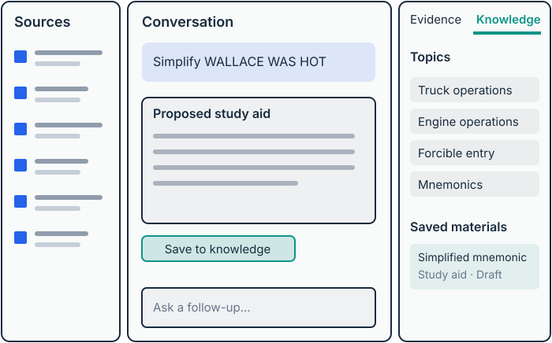

<!doctype html><html lang="en"><meta charset="utf-8"><meta name="viewport" content="width=device-width,initial-scale=1"><title>Seneca workspace knowledge concept</title><style>body{font:15px system-ui;background:#f3f5f7;color:#172b3d;padding:24px}main{background:white;max-width:1000px;margin:auto;border:1px solid #dce2e8;border-radius:12px;padding:12px}header{background:#102538;color:white;display:flex;justify-content:space-between;padding:12px;border-radius:5px}img{width:100%;height:auto;margin-top:12px}small{color:#64748b}</style><main><header><b>Seneca</b><span>Workspaces · Engineering</span></header><small>Conceptual workspace layout — Evidence and Knowledge as complementary right-panel tabs.</small></main></html>